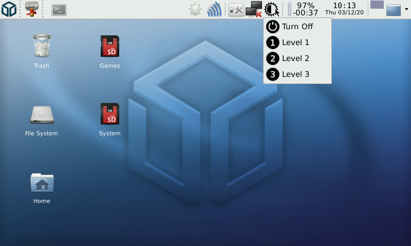

Steward
分享是一種喜悅、更是一種幸福
掌機 - Pandora(Rebirth) - SuperZaxxon - Python - 自製鍵盤背光控制
trayicon.py
#!/usr/bin/python
import os
import sys
import gtk
import glib
import time
import commands
import subprocess
base_path = '/usr/pandora/trayicon/'
class pandora:
def __init__(self):
self.statusicon = gtk.StatusIcon()
self.statusicon.set_from_file('{}{}'.format(base_path, 'main.png'))
self.statusicon.connect("activate", self.left_click_event)
def left_click_event(self, event):
time = gtk.get_current_event_time()
button = gtk.get_current_event().button
menu = gtk.Menu()
submenu = None
img = gtk.Image()
img.set_from_file('{}{}'.format(base_path, 'off.png'))
submenu = gtk.ImageMenuItem("Turn Off")
submenu.connect("button-press-event", self.off)
submenu.set_image(img)
menu.append(submenu)
submenu = None
img = gtk.Image()
img.set_from_file('{}{}'.format(base_path, 'lv1.png'))
submenu = gtk.ImageMenuItem("Level 1")
submenu.connect("button-press-event", self.lv1)
submenu.set_image(img)
menu.append(submenu)
submenu = None
img = gtk.Image()
img.set_from_file('{}{}'.format(base_path, 'lv2.png'))
submenu = gtk.ImageMenuItem("Level 2")
submenu.connect("button-press-event", self.lv2)
submenu.set_image(img)
menu.append(submenu)
submenu = None
img = gtk.Image()
img.set_from_file('{}{}'.format(base_path, 'lv3.png'))
submenu = gtk.ImageMenuItem("Level 3")
submenu.connect("button-press-event", self.lv3)
submenu.set_image(img)
menu.append(submenu)
'''
menu.append(gtk.SeparatorMenuItem())
menuexit = gtk.ImageMenuItem("Exit")
img = gtk.Image()
img.set_from_file('{}{}'.format(base_path, 'exit.png'))
menuexit.set_image(img)
menuexit.connect("button-press-event", self.exit)
menu.append(menuexit)
'''
menu.show_all()
menu.popup(None, None, gtk.status_icon_position_menu, button, time, self.statusicon)
def off(self, widget, event):
os.system('echo 0 > /sys/class/leds/pandora::keypad_bl/brightness')
def lv1(self, widget, event):
os.system('echo 50 > /sys/class/leds/pandora::keypad_bl/brightness')
def lv2(self, widget, event):
os.system('echo 150 > /sys/class/leds/pandora::keypad_bl/brightness')
def lv3(self, widget, event):
os.system('echo 250 > /sys/class/leds/pandora::keypad_bl/brightness')
def exit(self, widget, event):
if event.button == 1:
gtk.main_quit()
pandora()
gtk.main()
完成
